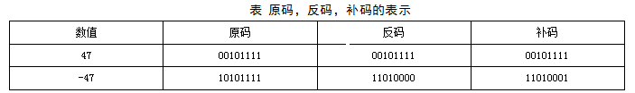
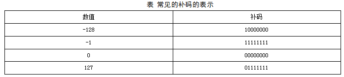
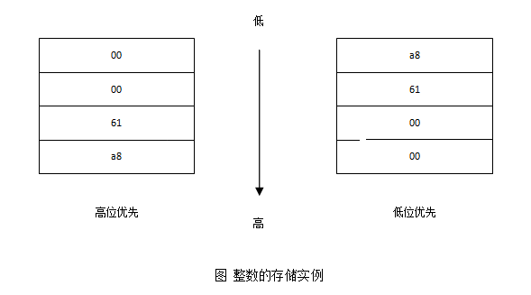

1整数的存储
大家知道，整数包括负数，零，和正数。计算机中的整数分为有符号数和无符号数。有符号数的最高位表示符号：即最高位为0，表示正数，最高位为1，表示负数。无符号数表示非负数，整个位数都用来表示整数的值。 如果用N位来表示整数，那么有符号数的范围为：[-2^(N-1)，(2^(N-1))-1]；无符号数的表示范围为[0，(2^N)-1]。比如，用8位来表示有符号整数数，由于第8位用于表示了符号，因此，整数的表示范围为[-128，+127]；如果是表示无符号整数，则表示范围为[0，255]。
一、整数的编码
整数的编码分为原码、反码、和补码。计算里使用的是补码的存储方式。它们的定义如下：
原码：在数值前面增加了一位符号位（即最高位为符号位），该位为0表示正数，该位为1表示负数，其余位表示数值的大小。
反码：正整数的反码就是其自身，而负整数的反码可以通过对其绝对值逐位求反来求得。
补码：正数的补码与原码相同，负数的补码就是对该负数的绝对值求反加1，0的补码是0。
因为计算机是以补码来存储整数的，所以补码就显得很重要。那么如何计算整数的补码呢？
下面以具体例子来说明。
100的补码：01100100
0的补码：0
-100的补码：绝对值：01100100 -->取反加1：10011011+1 -->10011100
1的补码：00000001
-1的补码：绝对值：00000001 -->取反加1：111111110+1 -->11111111
127的补码：01111111
-128的补码：绝对值：10000000 -->取反加1：01111111+1 -->10000000 在计算机系统中，数值一律用补码来表示（存储）。下表是一个原码，反码，补码的表示例子。
知道了一个补码，如何求出它对应的值呢？
正数：就是本身
0:0
负数：补码取反+1就是它本身绝对值。
从定义可以看出，正数的补码，反码，原码相同。0的补码就是本身。那么负数的原码和补码如何转换呢？已知一个负数求补码方法：绝对值原码按位求反加1。已知负数补码求负数方法：符号位不变，其他位按位求反加1。对于8位整数来说，补码的表示范围为[-128，127]。 大家应该记住一些常见的补码的表示，这些数包括但不局限于下面表中列出的数：
那么有了原码，计算机为什么还要用补码呢？
来看看它们的运算情况。 假设字长为8位 ，那么原码的运算方式为：
1 - 1 = 1 + ( -1 ) = (00000001) + (10000001) = (10000010) = -2，
这显然不正确。原码在两个整数的加法运算中是没有问题的，问题出现在带符号位的负数身上。 原码无法满足运算要求，因此对除符号位外的其余各位逐位取反就产生了反码。反码的取值空间和原码相同且一一对应。下面是反码的减法运算：
1 - 1 = 1 + ( -1 ) = (00000001) + (11111110) = (11111111) = ( -0 )
有问题。
1 – 2 = 1 + ( -2 ) = (00000001) + (11111101) = (11111110) = ( -1 )
正确。反码的问题出现在(+0)和(-0)上，因为在人们的计算概念中零是没有正负之分的。 再来看补码的加减运算如下：
1 - 1 = 1 + （-1） = (00000001) + (11111111) = (00000000) = 0
正确。
1 – 2 = 1 + （-2） = (00000001) + (11111110) = (11111111) = ( -1 )
正确。
通过补码的运算，可以看出补码的设计目的是：
⑴ 使符号位能与有效值部分一起参加运算，从而简化运算规则。
⑵ 使减法运算转换为加法运算，进一步简化计算机中运算器的线路设计。
此外，在补码中用-128代替了-0，所以没有+0和-0之分，符合常理，所以补码的表示范围为： -128~0~127共256个。
注意-128没有相对应的原码和反码，-128的补码为：10000000。
二、整数的存储
整数的存储分为高位优先存储（big-endian）和低位优先存储（little-endian）。
高位优先存储：高位首先存在低地址。
低位优先存储：低位首先存在低地址。
假设一个32位整数的值为25000。25000的补码为： 0x000061a8，共4个字节(注意到，在十六进制中，2个数为一个字节），其中最左边的00是最高位，然后依次为00次高位，61次低位，a8低位。 那么在内存中如何存放这4个字节呢？也就是内存中的低地址是优先存放最高位还是最低位呢？ 下图是这一个整数的低位优先和高位优先的存储实例：
在上图中，高位优先的系统中，会优先把高位的00存放在低地址；而低位优先的系统正好相反，将低位a8优先存放在内存中的低地址。
如何判断一个系统是低位优先或者高位优先？这个问题曾经在笔者面试SUN公司的时候被考查过，并且要求写出判断代码。 首先，来看整数1在高位优先和低位优先的系统中的存储。如下图所示：

通过上面的存储格式可以判断出，低位优先时，低字节的值为1，高位优先时，低字节的值为0。所以，给出下面2种判断方法的代码：
//第一种方法：
bool is_integer_lower_store()
{
int x = 0x1;
char *p = (char *)&x;
if (*p == 1)
return true;
else
return false;
}
//第二种方法：
typedef union {
char c;
int a;
} U;
bool is_integer_lower_store()
{
U u;
u.a = 1;
if (u.c == 1)
return true;
else
return false;
}
在这两种判断方法中，都利用了0x01在低位优先中最低字节值为1，在高位优先中最低值为0的特性。用一个指向字符的指针就可以获得int整数的第一个字节。获得了第一个字节的值，就可以根据上面的特性来判断出系统究竟是低位优先还是高位优先。
题目：设计一个算法，改变一个整数的存储方式，即低位优先<-->高位优先
int change_int_storage(int val)
{
int iRun = 0, i = 0;
char* pByte= (char*)&val; // 指向整数的低地址，取一个字节
i = sizeof(int)-1;
while (i >= 0)
{
iRun |= *pByte<<(i*8);// 把整数的第1字节，第2字节，第3字节，第四4字节
// 一次左移24位，16位，8位和0位
pByte++; // 前进一个字节
i--;
}
return iRun;
}
三、网络字节序
由于现实的系统中，不同的系统采取的整数存储的方式不一样，有的使用的是低位优先，有的使用的是高位优先存储方式。 那么将一个整数值，通过网络从一台机器发送到另外一台机器之后，整数的存储方式可能就变了。
因此，为了使得整数在传输的过程中保持值不变，需要 定义一个网络字节序和本地字节序。 也就是，把一个整数传输到网络的时候，统一转化为网络字节序。当这个整数通过网络传输到对方本地之后， 再统一把网络字节序转化为对应的本地字节序。 实际上，网络字节序是高位优先存储方式。而到达对方系统之后，再根据对方使用的整数存储方法，转化为对应的本地字节序。
比如网络上有2台机器，一个整数0x12345678，从一台系统中使用的是低位优先存储，传输到另外一台使用的是高位优先存储方式的机器中。 那么整数的传输为：
本地字节序：0x78563421-->网络字节序：0x12345678-->本地字节序：0x12345678
在实际的网络编程中，我们一般使用htonl()来实现本地字节序到网络字节序转换； 使用ntohl()来实现从网络字节序到本地字节序的转换。
思考题1（阿里巴巴2015实习生笔试真题）：
IP数据报头采用（）字节序，在此字节序下从低地址到高地址0x1234的表示形式为 （） 。
A.big_endian,0x12 0x34 0 0
B.little_endian,0x34 0x12 0 0
C.big_endian,0 0 0x12 0x34
D.little_endian, 0 0 0x34 0x12
思考题2：（阿里巴巴面试题）：
下面代码在16位系统中，打印输出为：
int i = 65536;
printf("%d\n",i);
i=65535;
printf("%d\n",i);
本页共142段，4341个字符，8789 Byte(字节)